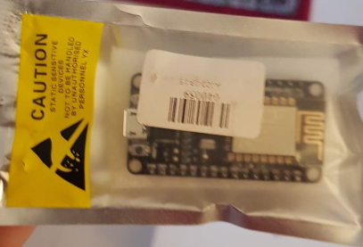
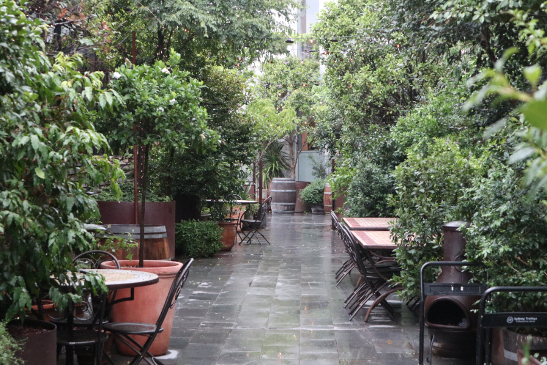
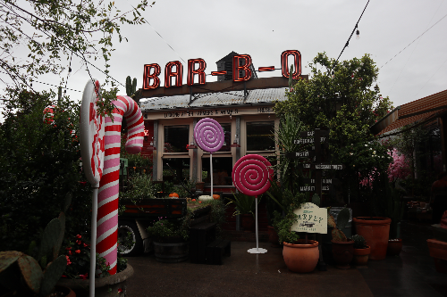
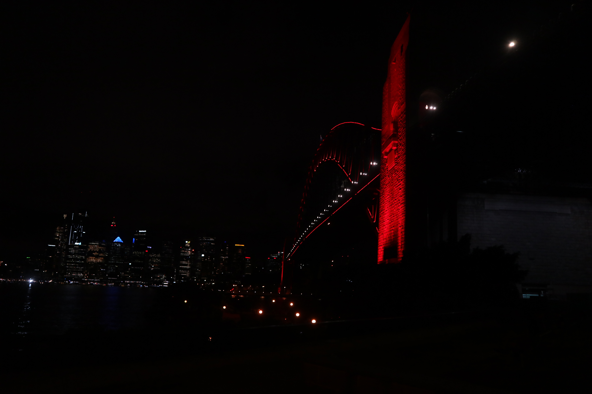
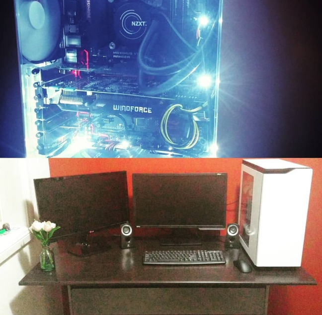

A Little About Me
I have chosen not to include any personal information in this blog.
I’m currently an RMIT student, studying a Bachelor of IT. In my spare time I enjoy building things, such as automation projects. I’m currently working on a few IoT personal projects, one of which I have included in this blog.
My Hobbies
Aside from tinkering around with things around the house, my hobbies include playing video games, playing music and attending car conventions. I love anything to do with cars, and it was essentially a catalyst for me picking IT. I spent a lot of time playing racing games as a kid, I decided I wanted to know how developers made those games. Additionally, I was fascinated with how various electrical components worked together. As I got older, I realised learning about technology would be a good stepping stone in my endeavour to constantly build things.
I have a passion for racing and the car scene and it goes hand in hand with my love of technology. In a way, they provide me with an adrenaline rush and also a mental challenge. I go through phases with my hobbies. I’ve just taken up photography and I love gaming. Whatever is the flavour of the month really.
Photo examples:
  My Interest in IT
I became interested in Information Technology for various reasons:
- I wanted to know how things work. When I was younger I spent a lot of time trying to work out how the TV would work. When I got my first toy laptop, I tried to plug it into the family TV causing it short circuit. Even though I got into trouble, I was just so fascinated with technology.
- My love for cars, especially games like Need For Speed: Underground got me interested in gaming. I wanted to know how these games worked.
- Enjoying building things. I liked the idea of being able to put together things. I build a computer a few years ago and although it eventually died I was very proud of my achievement.
Example of a computer I built
Why RMIT?
I expect to learn about how information technology is utilised in the wider world. Programming skills are one of the key learning attributes that I am hoping to improve. I can conceptually understand programming but I really struggle with deploying and implementing code. Since studying online, I have drastically improved my coding ability. Before I struggled with setting up the dev environments, which is now no longer an issue as I have been able to utilise the skills I have picked up in this course.
I have already picked up GitHub, Discord, Trello skills whilst pursing my studies and I hope to apply these skills in my everyday life. I am also excited to learn about how to build projects and how to deploy them.
Learning Expectations
Aside from learning about information technology and how it affects the wider world; I was definitely interested in learning some of the technical skills that my studies afforded me. For example, some of these courses are programming based. I hope to leverage some of the technical skills in those courses (not just the programming aspect of it) for projects I would like to work on in my spare time. For example, I have already picked up GitHub, Discord, Trello skills whilst pursing my studies and I hope to apply these skills in my everyday life. I am also excited to learn about how to build projects and how to deploy them.